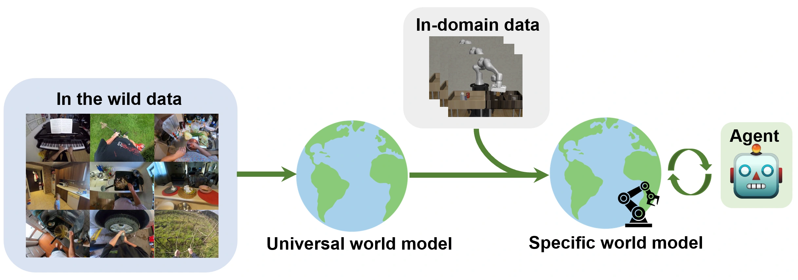
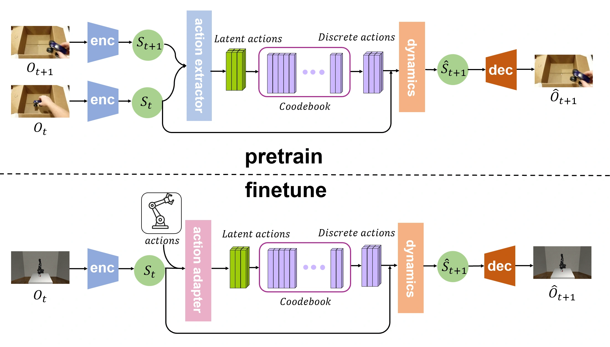
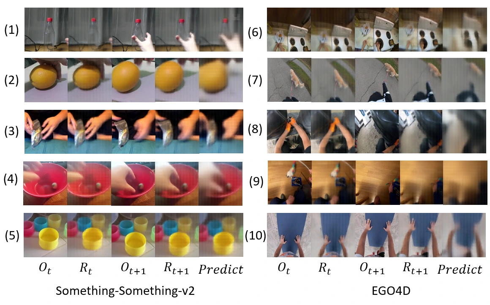
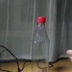
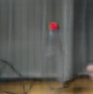
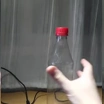
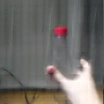
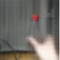
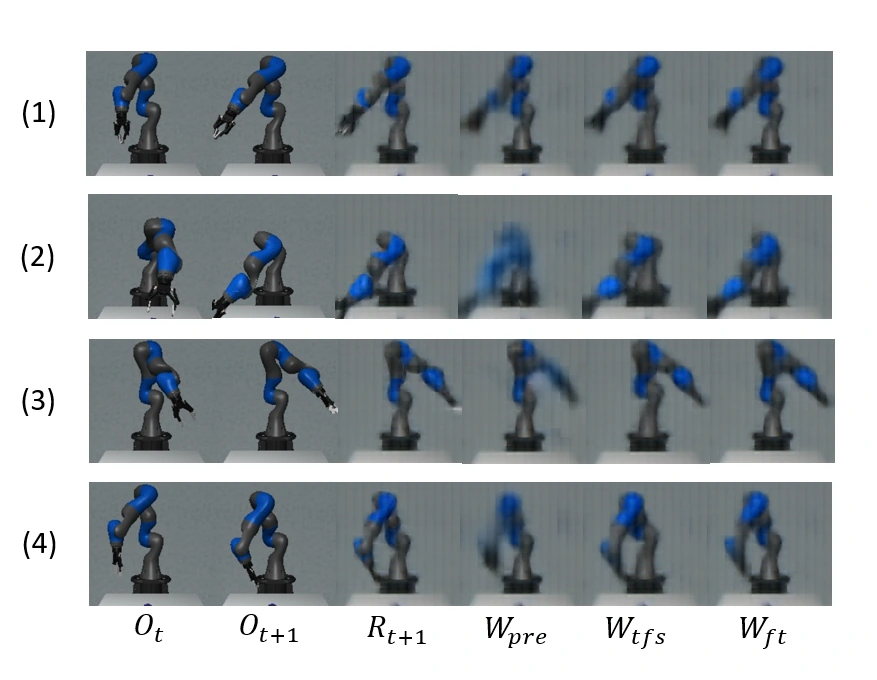
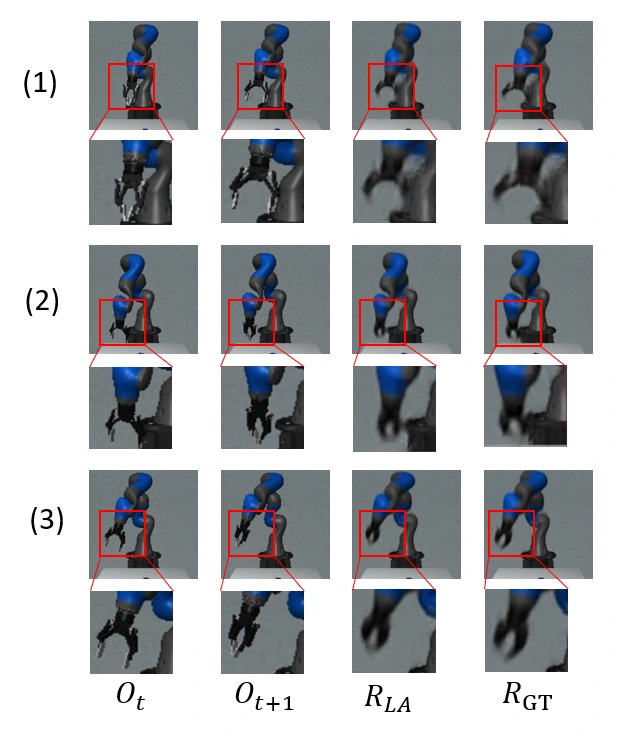

Learn without action labels
Extract compact latent actions directly from pairs of neighboring video frames.
1 Shanghai Qi Zhi Institute 2 Tsinghua University
Pretrain a world model on action-free, in-the-wild videos,
then specialize it with a small amount of in-domain data.

Extract compact latent actions directly from pairs of neighboring video frames.
Pretrain on everyday videos from Something-Something-v2 and Ego4D.
Improve predictions in a new domain with just 2,000 paired frames.
World models play a crucial role in model-based reinforcement learning (RL) by providing predictive representations of an agent in an environment and enabling the agent to reason about the future and make more informed decisions. However, there are still two main problems limiting the applications of world models. First, current methods typically train world models using only massive domain-specific data, making it challenging to generalize to unseen scenarios or adapt to changes in the environment. Second, it is difficult to define actions when world models are trained using in-the-wild videos.
In this work, we tackle these two problems by learning a general-purpose world model from a diverse and large-scale real-world video dataset with extracted latent actions. Specifically, our approach leverages a pretrained vision encoder to project images of two adjacent frames into states, extracts latent actions into a low-dimensional space based on vector quantization, and learns a dynamics function using these latent actions.
Results show that the proposed generic world model can successfully extract latent actions from arbitrary neighboring frames when testing on in-the-wild video datasets. Furthermore, fine-tuning on only a small amount of in-domain data can significantly improve the accuracy of the generic world model when adapting to unseen environments.
Learn compact latent actions from videos, then align them with environment-specific actions.

A frozen MAE encoder and decoder provide visual representations and image reconstruction for 224 × 224 observations.
A 4-layer ViT action extractor and a VQ-VAE with 1,024 codes of 64 dimensions create a compact information bottleneck. A 2-layer ViT learns dynamics.
An action adapter takes the current state and ground-truth environment action and learns to match the extracted latent action.
Video frames are sampled at 0.2-second intervals. During pretraining, the visual encoder and decoder remain frozen while the action extractor, codebook, and dynamics network are optimized.
Future-frame prediction on Something-Something-v2 and Ego4D,
conditioned on latent actions extracted from neighboring frames.






LPIPS to next frame 0.193 vs. 0.280 to current ↓ LOWER IS BETTER
Static examples from the paper, not a live model. Reconstruction blur comes from the pretrained MAE decoder. LPIPS uses equally blurred observations.
Across all ten paper examples, predictions are closer to the next observation
than to the current observation. Lower LPIPS is better.
| Dataset | Compared with | Example 1 | Example 2 | Example 3 | Example 4 | Example 5 |
|---|---|---|---|---|---|---|
| SSv2 | Current O t | 0.280 | 0.437 | 0.350 | 0.323 | 0.416 |
| Next O t+1 | 0.193 | 0.240 | 0.224 | 0.201 | 0.153 | |
| Ego4D | Current O t | 0.470 | 0.378 | 0.540 | 0.427 | 0.397 |
| Next O t+1 | 0.370 | 0.247 | 0.385 | 0.232 | 0.284 |
Source: Table 1, supplied paper. Scores describe these examples rather than dataset-wide averages.
Small-data fine-tuning in a new environment.

Aligning latent actions with robot controls.

If you find this research useful, please cite the paper.
@inproceedings{cui2023universal,
title={A universal world model learned from large scale and diverse videos},
author={Cui, Hanchen and Gao, Yang},
booktitle={NeurIPS 2023 Foundation Models for Decision Making Workshop},
year={2023}
}